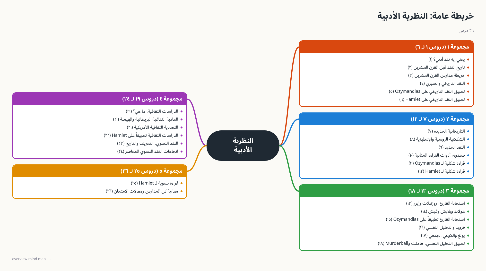

🧩
نظرية الأدب
المدارس والمفاهيم الأساسية في نظرية الأدب، درس بدرس.
🧠 شوف الخريطة الذهنية الشاملة للكورس

🔍
الدرس 1: Literary Theory 1: يعني إيه نقد أدبي؟📊 A2
🏛️
الدرس 2: Literary Theory 2: تاريخ النقد قبل القرن العشرين📊 A2
🗺️
الدرس 3: Literary Theory 3: خريطة مدارس القرن العشرين📊 B1
🏺
الدرس 4: Literary Theory 4: النقد التاريخي والسيري📊 B1
🗿
الدرس 5: Literary Theory 5: تطبيق النقد التاريخي على Ozymandias📊 B1
👑
الدرس 6: Literary Theory 6: تطبيق النقد التاريخي على Hamlet📊 B1
📜
الدرس 7: Literary Theory 7: التاريخانية الجديدة📊 B2
🔬
الدرس 8: Literary Theory 8: الشكلانية الروسية والإنجليزية📊 B2
🔎
الدرس 9: Literary Theory 9: النقد الجديد📊 B2
🧰
الدرس 10: Literary Theory 10: صندوق أدوات القراءة المتأنية📊 B1
🔦
الدرس 11: Literary Theory 11: قراءة شكلية لـ Ozymandias📊 B2
🪤
الدرس 12: Literary Theory 12: قراءة شكلية لـ Hamlet📊 B2
📖
الدرس 13: Literary Theory 13: استجابة القارئ، روزنبلات وإيزر📊 B2
🧠
الدرس 14: Literary Theory 14: هولاند وبلايش وفيش📊 B2
👓
الدرس 15: Literary Theory 15: استجابة القارئ تطبيقاً على Ozymandias📊 B2
🛋️
الدرس 16: Literary Theory 16: فرويد والتحليل النفسي📊 B2
🌀
الدرس 17: Literary Theory 17: يونغ واللاوعي الجمعي📊 B2
🎭
الدرس 18: Literary Theory 18: تطبيق التحليل النفسي، هاملت وMurderball📊 B2
🌍
الدرس 19: Literary Theory 19: الدراسات الثقافية، ما هي؟📊 B2
🏭
الدرس 20: Literary Theory 20: المادية الثقافية البريطانية والهيمنة📊 C1
🧩
الدرس 21: Literary Theory 21: التعددية الثقافية الأمريكية📊 C1
♟️
الدرس 22: Literary Theory 22: الدراسات الثقافية تطبيقاً على Hamlet📊 C1
♀️
الدرس 23: Literary Theory 23: النقد النسوي، التعريف والتاريخ📊 B2
🧵
الدرس 24: Literary Theory 24: اتجاهات النقد النسوي المعاصر📊 C1
🌹
الدرس 25: Literary Theory 25: قراءة نسوية لـ Hamlet📊 C1
⚖️
الدرس 26: Literary Theory 26: مقارنة كل المدارس ومقالات الامتحان📊 C1